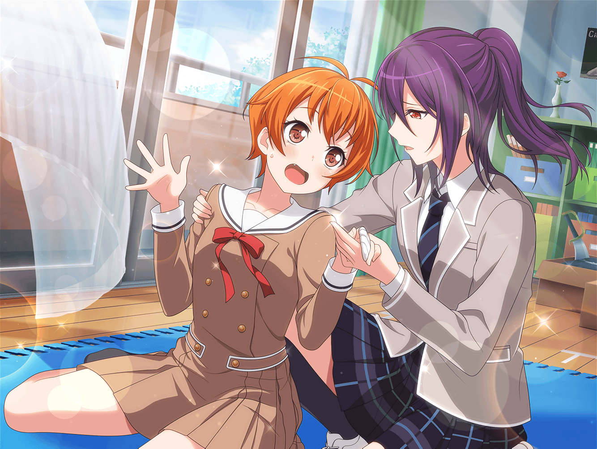

商店街
はぐみ
ひーちゃん、トモちん、今日も練習お疲れさま〜！
はいっ、コロッケとメンチカツ、お待ちどおさま～！
ひまり
ありがと、はぐ！
う～ん、やっぱり、練習の後のコロッケは最高だよね～！
巴
こっちのメンチカツも美味いぞ、
ほら、ひまりもひと口いるか？
ひまり
わ～、言わないで巴！ 今、ダイエット中なの！
１日に食べる量決めてるから
巴
……それ、コロッケ食べながら言うことか？
はぐみ
そしたらひーちゃん、また明日来てよ！
薫くんとみーくんも一緒にね！
ひまり
薫先輩も美咲ちゃんも、明日は一緒に帰れるといいよね。
今日は歌部分の最終確認するって残ってたから
巴
まあ、本番もかなり近づいてきたしな。
アタシも気合い入れていくよ！
ひまり
私も、明日は演劇部の人と一緒に、
お芝居の練習がんばるつもりだよ～！
もっと上手になっちゃうんだから！
はぐみ
もうすぐホワイトデーだもんねっ！
ん……ん〜？
はぐみ
ホワイトデー、ホワイトデー……
……う～ん、どうしよう……
ひまり
は、はぐ？ 急にどうしたの？
はぐみ
あのね……ほら、今って、いろんなお店が
ホワイトデーフェアをやってるでしょ？
巴
確かに……言われてみればこの商店街でも、
結構やってるな
はぐみ
そうなんだよ～！
そっちの雑貨屋さんは、ホワイトデーにちなんだ小物を
たくさん入荷したんだって！
巴
へえ……あのお菓子屋さんも、
期間限定の特別なラッピングしてるな
ひまり
あ！ あのお花屋さんの前にある、白と青のブーケかわいい～！
すごいね、ザ・ホワイトデーって感じ！
はぐみ
でしょでしょ、みんな楽しそうだよねっ！
こういうイベントの時って、商店街も盛り上がるんだ～！
はぐみ
だから、うちもね、
ホワイトデーのフェアがやりたいんだけど……
ひまり
でも、はぐのおうちはお肉屋さんでしょ？
お肉屋さんのホワイトデーって、何をするのかな？
巴
そもそもホワイトデーに
フェアやってる肉屋って見たことないな
はぐみ
はぐみも見たことないよ〜！
はぐみ
でもでも！
バレンタインの時も何もしなかったし、
今回も何もしないなんて……
はぐみ
季節のイベントで売り出せるのが、
クリスマスチキンだけなんて、つまんないよ～！
はぐみ
お肉屋さんも、いろんなイベント楽しみたいっ！
はぐみ
だからね、トモちん、ひーちゃん！
一緒に何か考えてほしいんだ！
巴
うーん、肉屋のホワイトデーか。
何ができるかな……
ひまり
お肉屋さん……あ、そうだ！
ハート型のハンバーグとかいいんじゃない？
ひまり
ハンバーグの上にケチャップでハートを描いたら、
ハートいっぱいで、絶対ロマンチックな晩ごはんになるよ！
はぐみ
ひーちゃん、すごいすごいっ！
それなら、うーんと大きい方がかわいいよねっ！
巴
それ、ロマンチックか……？
ひまり
ダメかな～……あ、それならさ、
ケチャップじゃなくてホワイトソースなら、
ホワイトデーっぽさ出るんじゃない！？
はぐみ
そっかそっか！
ホワイトソースのほうが、ホワイトデーって感じするね！
はぐみ
それなら、クリームコロッケも半額にする！
ホワイトデーっぽいよね！
巴
いや、もうただの特売になってるよ、はぐみ。
ていうかコロッケ半額は、普通の日でもたまにやってるし
ひまり
えー？ じゃあ、巴はどういうのだったらいいの？
巴
そうだな……半額にするんじゃなくて、
ホワイトデー限定のクリームコロッケを新しく
作ってみるとかはどうだ？
はぐみ
すごいっ、トモちん！
そしたら、限定コロッケを２個買ってくれた人には、
もうひとつコロッケ、おまけしちゃうよ！
ひまり
や、やっぱり特売日っぽくなってるよ、はぐ！
それに、私の考えたハート型ハンバーグだって同じような
案だったじゃん、巴〜！
ひまり
……っていうか、こんな話してたら、
クリームコロッケも食べたくなってきちゃった～！
巴
あはは、さっき食べたばっかだろ。
ダイエットの話はどこいったんだー？
巴
……と、言いつつアタシも食べたくなってきたな
はぐみ
わ～！ 食べて食べて～！
揚げたてで美味しいよ！
ひまり
あー、ずる～い！
そんなの言われたら食べるしかないよ～！
巴
はぐみ、クリームコロッケ２個、よろしく！
はぐみ
はーいっ！
えへへ、毎度あり～！